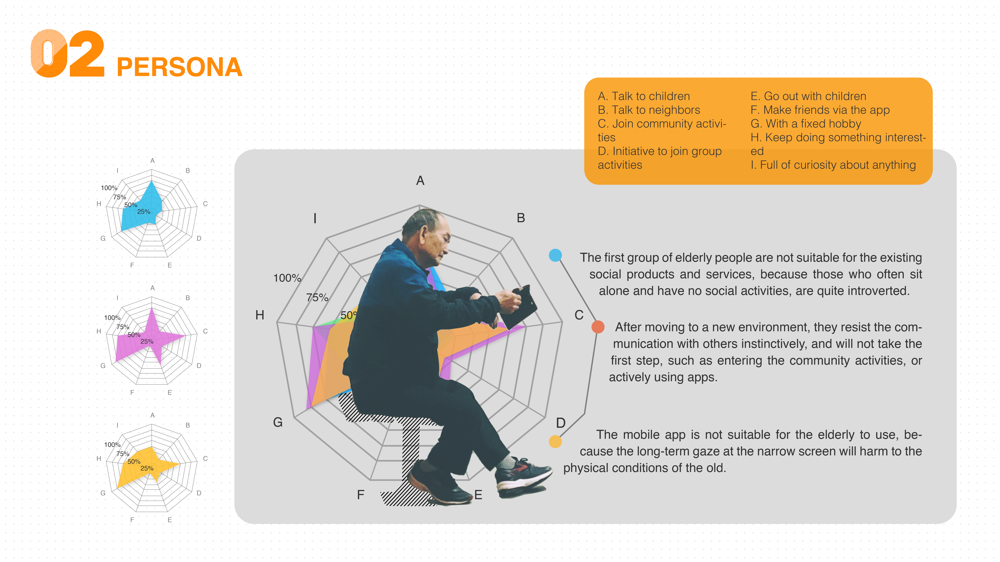
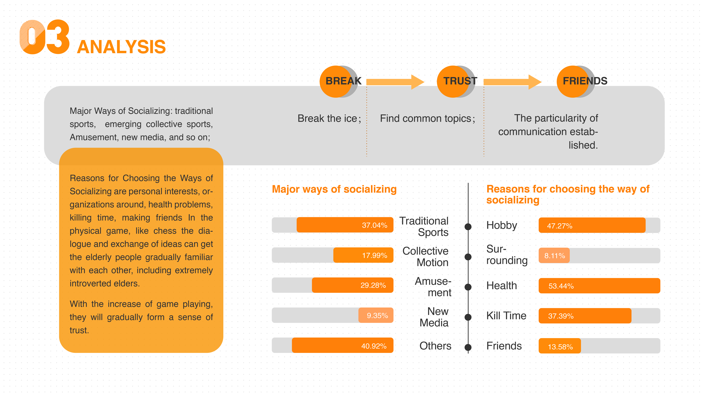
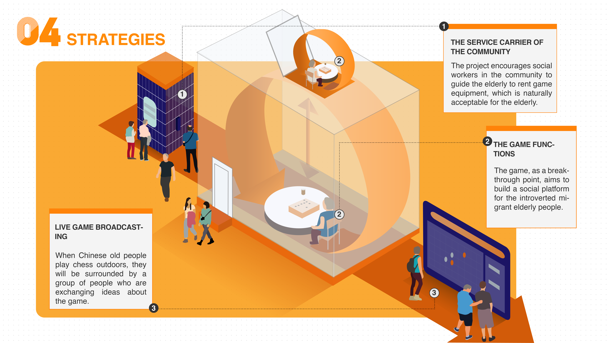
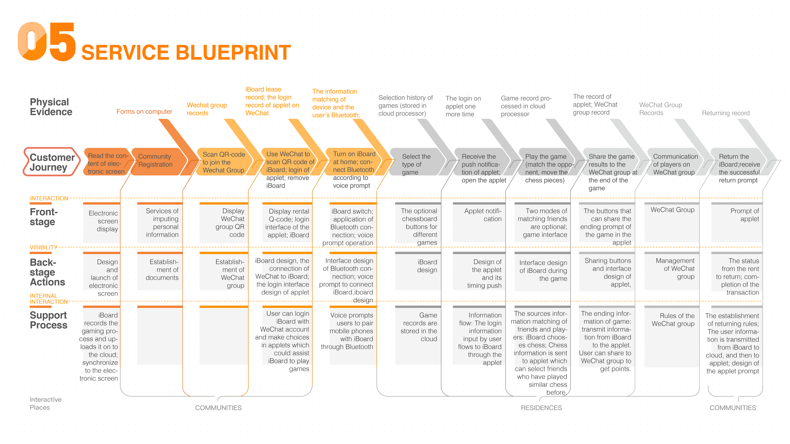
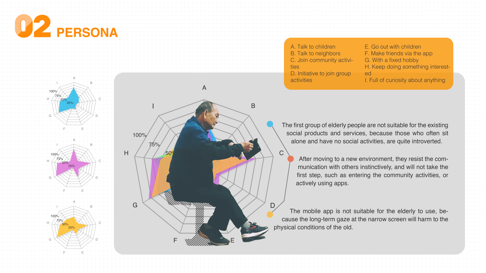
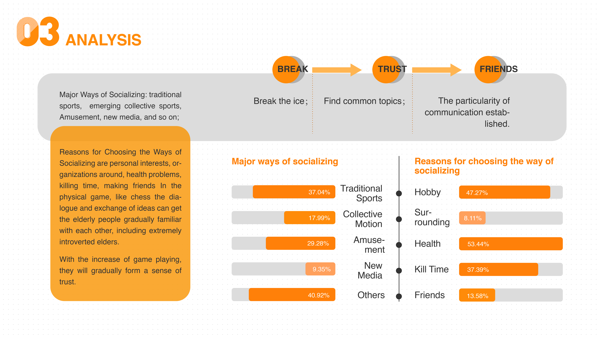
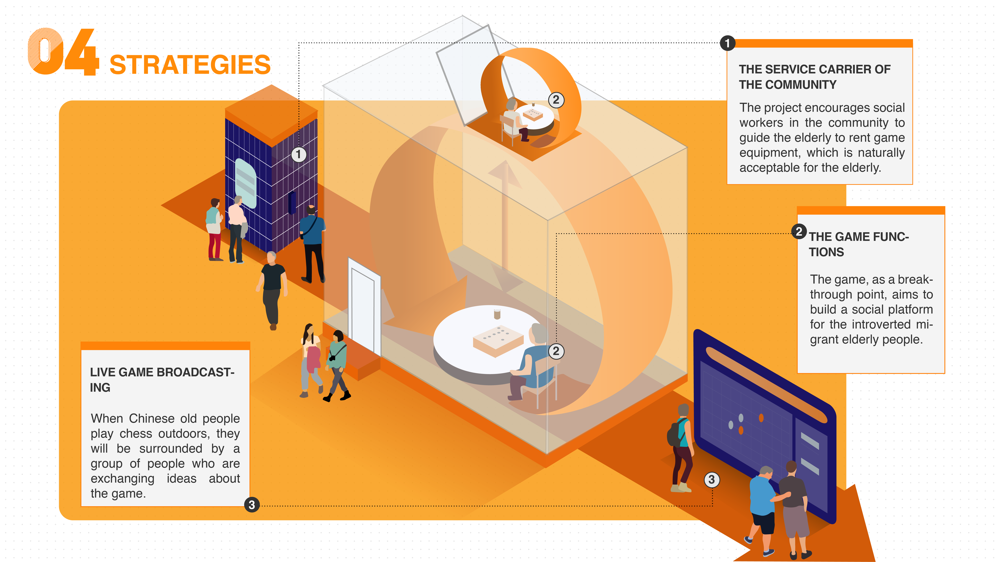
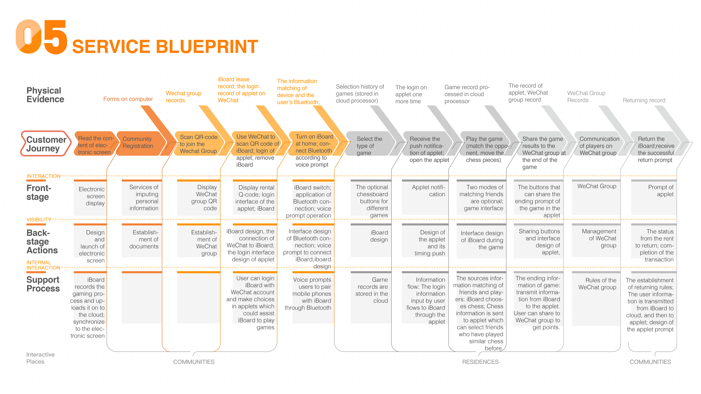
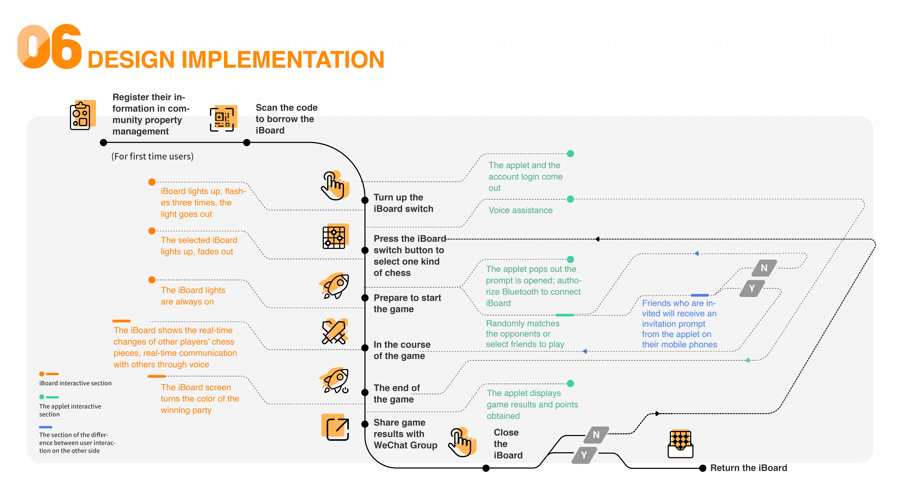

Chessnet
Interaction Design, Service & Product & App, 2020

×

Chessnet is a creative service design project aimed to solve the social problems that the migrant elderly people are facing. “The migrant elderly people” refers to a group of people who migrate to an urban area where their children are living.

 







User Journy Map
iBoard Function Introduction